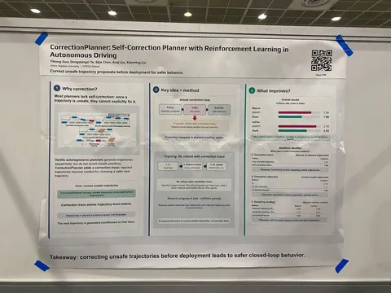
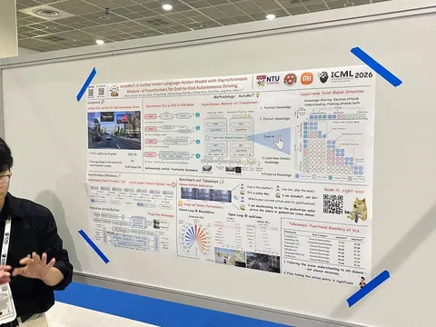
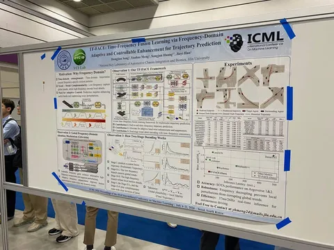

В этом году конференция продолжает бить собственные рекорды по количеству участников. В основной программе — 168 устных докладов и почти 5900 постеров.
Рассказываем о трёх классных постерах про АТ.
CorrectionPlanner: Self-Correction Planner with Reinforcement Learning in Autonomous Driving
Авторы предлагают архитектуру планера, которая умеет корректировать траекторию во время декодинга. Если голова-критик утверждает, что предложенный токен небезопасен, то он добавляется в список невалидных. Авторы называют его correction trace. На этот список обуславливается следующая, исправляющая генерация.
Перегенерация продолжается до тех пор, пока не найдётся валидный токен или не достигнется заданное максимальное количество коррекций. В последнем случае дефолтный токен — «продожать делать то, что делаем сейчас».
Претрейн делают через imitation learning, а потом замораживают его и используют для интерактивности агентов. В то же время саму модель дообучают реагировать на небезопасные роллауты через RL с положительным ревордом за прогресс и отрицательным — за столкновения.
AutoMoT: A Unified Vision-Language-Action Model with Asynchronous Mixture -of-Transformers for End-to-End Autonomous Driving
Работа об архитектуре для ускорения end-to-end за счёт разделения и асинхронного инференса медленного VLM reasoner и быстрого action expert.
Большую предобученную VLM-модель замораживают: инференсят независимо и асинхронно от action-модели, с которой их объединяет общий attention. Между тяжёлыми пересчётами латентов используют KV-кеш.
Авторы по сути показали, что необязательно дообучать VLM на специфику задачи автономного вождения — достаточно улучшить action-часть. И за счёт независимого асинхронного инференса action-эксперта значительно снизили latency.
TF-FACE: Time-Frequency Fusion Learning via Frequency-Domain Adaptive and Controllable Enhancement for Trajectory Prediction
В этой статье предлагают делать предикшн в частотной области вместо временной, потому что в ней естественным образом разделены:
• Низкочастотные составляющие — тренды. Например, движение вперед.
• Высокочастотные сигналы. Например, локальный обгон или уступание пешеходу.
Предлагают новую архитектуру, которую называют Gated Frequency Domain Attention Mechanism. Она прогоняет Q, K и V через преобразование Фурье и attention, адаптированный для комплексных чисел.
Утверждают, что такое разделение позволяет локальным пертурбациям не влиять на глобальную цель, которая содержится в тренде.
#YaICML2026
Собрал лучшее
404 driver not found


